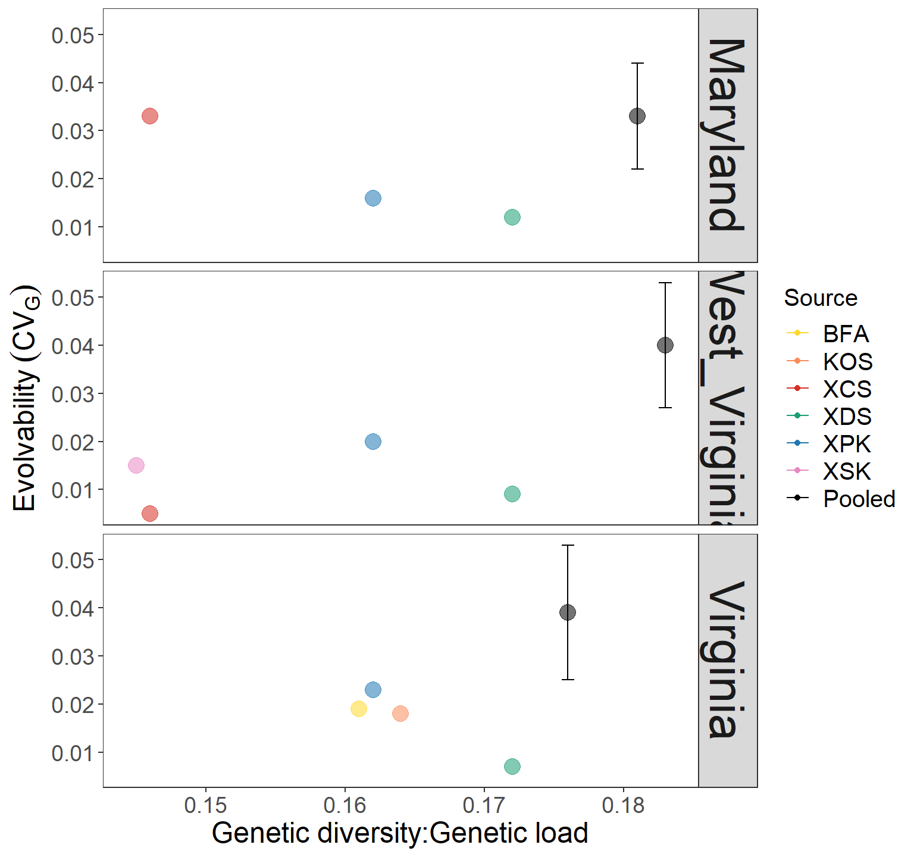

# packages
require(lmerTest)
require(tidyverse)5 Evolutionary potential of seed sources
5.1 Data
data <- read.csv("./data/tnc_spring_2022.csv", header=TRUE)
plot_cor <- read.csv("./data/plot_coordinates.csv", header=TRUE)
# add coordinates
data <- merge(data,plot_cor[,c("Replication","POINT_X","POINT_Y")])5.1.1 Calculations
phenotypic variance (Vp) = variance of phenotypic trait observed
- Vp = var(model residuals x model intercept)
Additive genetic variance (Va) = heritability of the trait x phenotypic variance (Vp)
- Va = H2 x Vp
Phenotypic variance (\(V_{P}\)) = variance of phenotypic trait observed
- \(V_{P}\) = var(model residuals x model intercept)
Additive genetic variance (Va) = heritability of the trait x phenotypic variance (Vp)
\[V_{A} = h^{2}.{V_{P}}\] Where,
\(V_{A}\) is additie genetic variance,
\(h^{2}\) is narrow sense heritability,
\(V_{P}\) is phenotypic varianceCoefficent of Evolvability (\(CV_{A}\)) = the evolutionary potential of a trait to evolve
\[CV_{A} = \frac{\sqrt{V_{A}}}{\overline{X}}\]
Where,
\(e_{\mu}\) is evolvability,
\(V_{A}\) is additie genetic variance,
\(\overline{X}\) is phenotypic mean
We however use broad sense heritability (\(H^{2} = V_{G}/V_{P}\)) in our calculation, thus we take \(V_{G}\) for calculating evolvability instead of \(V_{A}\).
\[CV_{G} = \frac{\sqrt{V_{G}}}{\overline{X}}\]
5.2 Heritability
5.2.1 MCMCglmm model
## note
# gw - growth
# B - lmer family blups (means)
require(lmerTest)
require(dplyr)
require(tidyr)
require(MCMCglmm)# set priors
Prior <- list(R=list(V=1, nu=0.002), # R - prior on residual variance
G=list(G1=list(V=1, nu=0.002), # G prior for random variance # G1 = for first random effect, here its Source
G2=list(V=1, nu=0.002))) # G2 = for second random effect, here its Replication# Common garden data
# height
growth_2020 <- read.csv("./data/MCMCglmm/Growth_2020.csv", stringsAsFactors = T)
growth_2020$mBed <- paste0(growth_2020$Garden,"_",growth_2020$Bed)
# Meta data
Meta <- read.table("./data/RS_Exome_metadata.txt", sep="\t",header=T)
# remove family YRB_01
Meta <- Meta[Meta$Family!="YRB_01",]
meta <- as.data.frame(Meta$Family);colnames(meta)[1] <- "Family"
nrow(meta)[1] 339# height 2019
growth_edge <- growth_2020 %>% filter(Region=="Edge")
length(unique(growth_edge$Family)) # no. of familes considered[1] 110length(unique(growth_edge$Population)) # no. of populations considered[1] 23# per garden site
# MD
growth_edge_MD <- growth_2020 %>% filter(Garden=="Maryland")
colnames(growth_edge_MD)[19] <- "Height"# One year height growth
OneYear_height_mod_edge_MD <- MCMCglmm(Height ~ 1,
random= ~ Family + Population,
family="gaussian",
data=growth_edge_MD,
prior=Prior, pr=TRUE, burnin=10000 , nitt=100000000 , thin=1000)
# saveRDS(OneYear_height_mod_edge_MD,"/home/Anoob/mydata/Anoob/TNC/OUTPUT/MCMCglmm/OneYear_height_mod_edge_MD_2019")5.2.2 Estimate heritability based on MCMCglmm output
## A) One year height
# One year height
OneYear_height_mod_edge_MD <- readRDS("./OUTPUT/MCMCglmm/OneYear_height_mod_edge_MD_2019")
# heritability
OneYear_height_mod_edge_MD_H2 <- (2*(OneYear_height_mod_edge_MD$VCV[,"Family"]) + OneYear_height_mod_edge_MD$VCV[,"Population"])/rowSums(OneYear_height_mod_edge_MD[["VCV"]])
posterior.mode(OneYear_height_mod_edge_MD_H2)5.3 Part I: Bootstrapping \(CV_{G}\)
bootstrap the \(CV_{G}\) for the pooled data
# function to bootstrap the CVg estiamtes per region
Evol_boot <- function(data,n,model_test,maxiter,H2_val){
for (i in 1:maxiter) {
#Creating a resampled dataset from the sample data
subset_data = data[sample(1:nrow(data), size=n, replace = TRUE),]
#Running the regression on these data
model <- lmer(model_test, data = subset_data)
# pooled
subset_data$pooledVp <- predict(model)
# model predictions
VP_temp_tot <- subset_data
VP_temp_tot <- VP_temp_tot$pooledVp
# remove outliers
quartiles <- quantile(VP_temp_tot, probs=c(.25, .75), na.rm = FALSE)
IQR <- IQR(VP_temp_tot)
Lower <- quartiles[1] - 1.5*IQR
Upper <- quartiles[2] + 1.5*IQR
# outliers removed
VP_temp_tot <- subset(VP_temp_tot, VP_temp_tot > Lower & VP_temp_tot < Upper)
# pooled results
final_df <- data.frame(Run=i,
Source = "Pooled",
Vp = var(VP_temp_tot),
mean = mean(VP_temp_tot),
H2 = H2_val,
Va = var(VP_temp_tot)*H2_val,
CVa = sqrt(var(VP_temp_tot)*H2_val)/mean(VP_temp_tot))
# Append to dataframe
output <- rbind(output, final_df)
}
return(output)
}# input vals
H2_val <- 0.396 # heritability for height
model_test <- Height ~ 1 + Source + (1|Replication)
output <- NULL
MD_dat <- data %>% filter(Region=="Maryland")
WV_dat <- data %>% filter(Region=="West_Virginia")
VA_dat <- data %>% filter(Region=="Virginia")
# boot strap the CVg for the regions
set.seed(123) # set seedMD_boot_CVG <- Evol_boot(data=MD_dat,model_test=model_test,
n=200,maxiter=1000,H2_val=H2_val)
WV_boot_CVG <- Evol_boot(data=WV_dat,model_test=model_test,
n=200,maxiter=1000,H2_val=H2_val)
VA_boot_CVG <- Evol_boot(data=VA_dat,model_test=model_test,
n=200,maxiter=1000,H2_val=H2_val)5.4 Part II: Data curation
Genetic diversity and Genetic load
GDGL_list <- readRDS("./data/Genetic_diversity_and_Genetic_load/GDGL_list")
MD_GDGL <- GDGL_list$Maryland_GDGL
WV_GDGL <- GDGL_list$West_Virginia_GDGL
VA_GDGL <- GDGL_list$Virginia_GDGL
MD_GDGL <- MD_GDGL[-1,]
WV_GDGL <- WV_GDGL[-1,]
VA_GDGL <- VA_GDGL[-1,]GD:GL per source
md_gdgl <- read.csv("./data/Genetic_diversity_and_Genetic_load/maryland_GDGL_per_source.csv");md_gdgl <- md_gdgl[-1,];colnames(md_gdgl)[1] <- "Source"
wv_gdgl <- read.csv("./data/Genetic_diversity_and_Genetic_load/west_virginia_GDGL_per_source.csv");wv_gdgl <- wv_gdgl[-1,];colnames(wv_gdgl)[1] <- "Source"
va_gdgl <- read.csv("./data/Genetic_diversity_and_Genetic_load/virginia_GDGL_per_source.csv");va_gdgl <- va_gdgl[-1,];colnames(va_gdgl)[1] <- "Source"# Mean CVg
CVg_pop_MD <- MD_boot_CVG %>%
mutate(mean_CVg = mean(CVa)) %>%
mutate(SD = sd(CVa)) %>%
ungroup()
CVg_pop_MD$Region <- "Maryland"
CVg_pop_MD$Source <- "Pooled"
CVg_pop_MD$Vp <- NA
CVg_pop_MD$mean <- NA
CVg_pop_MD$H2 <- NA
CVg_pop_MD$Va <- NA
CVg_pop_MD <- unique(CVg_pop_MD[,c("Region","Source","Vp","mean","H2", "Va","mean_CVg","SD")])# Mean CVg
CVg_pop_WV <- WV_boot_CVG %>%
mutate(mean_CVg = mean(CVa)) %>%
mutate(SD = sd(CVa)) %>%
ungroup()
CVg_pop_WV$Region <- "West_Virginia"
CVg_pop_WV$Source <- "Pooled"
CVg_pop_WV$Vp <- NA
CVg_pop_WV$mean <- NA
CVg_pop_WV$H2 <- NA
CVg_pop_WV$Va <- NA
CVg_pop_WV <- unique(CVg_pop_WV[,c("Region","Source","Vp","mean","H2", "Va","mean_CVg","SD")])# Mean CVg
CVg_pop_VA <- VA_boot_CVG %>%
mutate(mean_CVg = mean(CVa)) %>%
mutate(SD = sd(CVa)) %>%
ungroup()
CVg_pop_VA$Region <- "Virginia"
CVg_pop_VA$Source <- "Pooled"
CVg_pop_VA$Vp <- NA
CVg_pop_VA$mean <- NA
CVg_pop_VA$H2 <- NA
CVg_pop_VA$Va <- NA
CVg_pop_VA <- unique(CVg_pop_VA[,c("Region","Source","Vp","mean","H2", "Va","mean_CVg","SD")])
CVg_pooled <- rbind(CVg_pop_MD,CVg_pop_WV,CVg_pop_VA)
colnames(CVg_pooled)[7] <- "CVg"
CVg_table <- read.csv("./data/CVa_TNC_H2")
CVg_table <- CVg_table[CVg_table$Source!="Pooled",]
colnames(CVg_table)[7] <- "CVg"
CVg_table$SD <- NA
CVg_comb <- rbind(CVg_table,CVg_pooled)# merge data
CVg_pop_MD <- merge(CVg_comb %>% filter(Region=="Maryland"),md_gdgl,all.x=T)
CVg_pop_MD[CVg_pop_MD$Source=="Pooled",9] <- round(MD_GDGL["XCS_XDS_XPK",]$Hexp,5)
CVg_pop_MD[CVg_pop_MD$Source=="Pooled",10] <- round(MD_GDGL["XCS_XDS_XPK",]$GenLoad,5)
CVg_pop_MD$GDGL <- CVg_pop_MD$Hexp/CVg_pop_MD$GenLoad
CVg_pop_WV <- merge(CVg_comb %>% filter(Region=="West_Virginia"),wv_gdgl,all.x=T)
CVg_pop_WV[CVg_pop_WV$Source=="Pooled",9] <- round(WV_GDGL["XCS_XDS_XPK_XSK",]$Hexp,5)
CVg_pop_WV[CVg_pop_WV$Source=="Pooled",10] <- round(WV_GDGL["XCS_XDS_XPK_XSK",]$GenLoad,5)
CVg_pop_WV$GDGL <- CVg_pop_WV$Hexp/CVg_pop_WV$GenLoad
CVg_pop_VA <- merge(CVg_comb %>% filter(Region=="Virginia"),va_gdgl,all.x=T)
CVg_pop_VA[CVg_pop_VA$Source=="Pooled",9] <- round(VA_GDGL["BFA_KOS_XDS_XPK",]$Hexp,5)
CVg_pop_VA[CVg_pop_VA$Source=="Pooled",10] <- round(VA_GDGL["BFA_KOS_XDS_XPK",]$GenLoad,5)
CVg_pop_VA$GDGL <- CVg_pop_VA$Hexp/CVg_pop_VA$GenLoad
CVg_gdgl <- rbind(CVg_pop_MD,CVg_pop_WV,CVg_pop_VA)
CVg_gdgl <- CVg_gdgl %>% mutate(across(where(is.numeric), ~round(., 3)))
CVg_gdgl$Region <- as.factor(CVg_gdgl$Region)
CVg_gdgl$Source <- as.factor(CVg_gdgl$Source)
CVg_gdgl$Region <- factor(CVg_gdgl$Region, levels = c("Maryland","West_Virginia","Virginia"))
CVg_gdgl$Source <- factor(CVg_gdgl$Source, levels = c("BFA","KOS","XCS","XDS","XPK","XSK","Pooled"))
DT::datatable(CVg_gdgl, rownames = T, options = list(pageLength = 14, dom = 'tip'),
filter = 'top')5.5 Part III: Visualization
# dim 800w 780h jpg 7.8h 8.0w pdf
CVg_gdgl_plot <- ggplot(CVg_gdgl, aes(x= GDGL, y = CVg, label = Source)) +
geom_point(aes(color = Source,
size = 4, alpha = 0.8)) +
scale_color_manual(values = c("#FFD92F","#FC8D59","#D73027","#1B9E77","#1F78B4","#E78AC3","black"))+
geom_errorbar(aes(ymin=CVg-SD,ymax=CVg+SD, color=Source)) +
# theme
ylab(bquote(Evolvability~(CV[G]))) +
xlab("Genetic diversity:Genetic load") +
theme_bw(base_size = 11, base_family = "Times") +
theme(axis.text=element_text(size=14),
axis.title=element_text(size=18),
panel.background = element_blank(),
legend.background = element_blank(),
panel.grid = element_blank(),
plot.background = element_blank(),
legend.title = element_text(size=15),
legend.text=element_text(size=15),
strip.text = element_text(size=30))
CVg_gdgl_plot + guides(alpha = "none", size = "none") + facet_grid(Region~.)